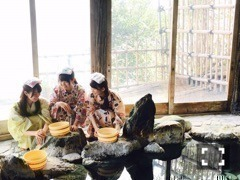
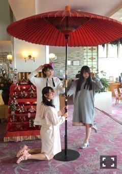

| 2016/03 22 Tue | ひめたん-0o0-その620 |
アンダーライブ
全国ツアー名古屋公演
～永島聖羅卒業コンサート～
終わりました！
来てくださった皆さん
ありがとうございました( ˇωˇ )
安心して卒業してもらいたくて
今までらりんが担っていた仕事を
私やメンバーみんなで背負って
ステージに立つことになったのですが
改めて感じたことが
彼女がいたから成立していたんだなというか
頼りっきりだったんだなというか。
ギリギリの中でやってたので
本番を迎えるまで
不安で不安で仕方がなかった。
でも今回のライブを通して
自分の役割を再認識させられました
これから始まる全国ツアーは
こんなスタンスで行こう、みたいな。
らりんのアイドルとしての
ラストステージに一緒に立てたことが
本当に良かったなと思います。
最後の最後、幕が下りたあとも
「なんか実感湧かないね」っていって
みんなで笑って楽屋に帰りました。
きっと後になって
だんだん寂しくなるんだろうな～
もう現場には来ないんだよね。
何かあったらすぐ
会いに行こうと思ってます(・∀・)b
東京帰ってから
ライブ映像を観たのですが
彼女の笑顔が眩しくて眩しくて。
あの屈託のない笑顔、
誰でも出来るものじゃないんだよね
トレードマークとはこのことだなって。
新しい夢への第一歩、
応援してます。
卒業おめでとう！

乃木團もこれにて解散。
20日昼公演で最後の演奏をしました。
ライブリハのあとでみんなで集まって
遅い時間までスタジオこもって練習して
なんかバンドっぽいね～とか言って( ˇωˇ )
氣志團さんとの対バンライブに始まり
西武ドーム、台湾公演、乃木坂46SHOW、
いろんなところで演奏したな～
翔さんとの対談も忘れられません。
たくさんの経験をさせていただきました
ありがとう乃木團！！


3/19 スピリッツ発売
万理華・小百合と3人で
表紙&巻頭グラビアをさせていただきました
カメラマンは川島小鳥さん！
「ふろがーる」とのコラボ企画！
この3人と言えば温泉、てことで
熱海に行ってきました
嬉しかった～( ˇωˇ )
日曜の夜はらじらー！サンデー
次回のゲストは
声優アーツに豊崎愛生さん、
乃木坂から橋本奈々未ちゃんが登場。
4週目ですが乃木坂回です
お間違いなきように！
ななみんへのおたよりお待ちしてます～
毎週金曜はソニレコ配信日！
3週目分が配信されてますね
是非チェックしてみて下さい。
チャンネル登録はこちらから！

明日、3/23
14thシングル「ハルジオンが咲く頃」
いよいよ発売になります。
あ、そうだ、
「ミュ～コミ＋プラス」ゲスト出演します
聞いてね！
～お知らせ～
3/23 ミュ～コミ＋プラス
3/27 のぎえいご
3/28 生ドル
4/6 トップエール
4/10 マーキー
最後に！
今週末に行われるセミナー
名古屋会場にお邪魔します！
初めてのことなので
どんな感じになるのかわからないですが
楽しみですo(^o^)o
(＊´・ω・＊)
コメント(555)
2016/03/22 23:54